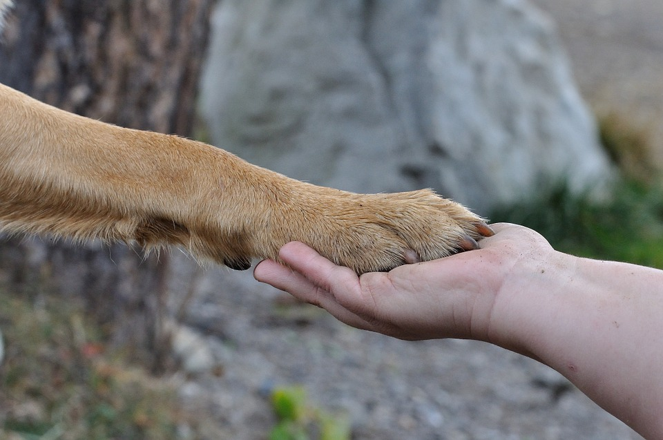
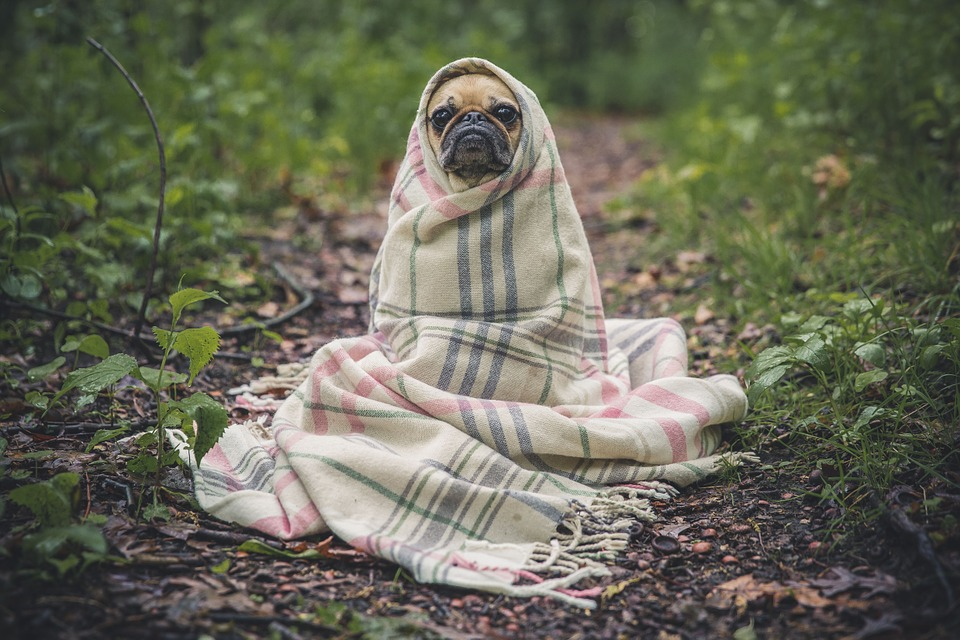
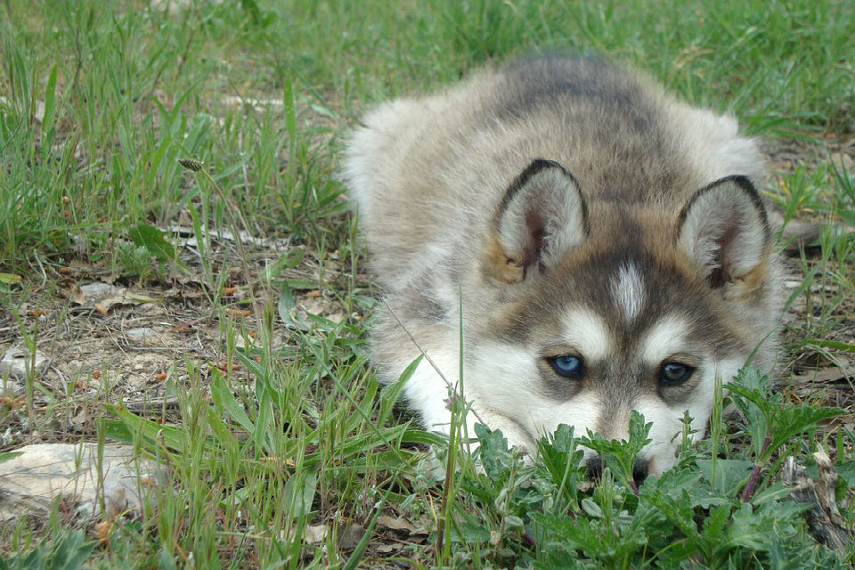
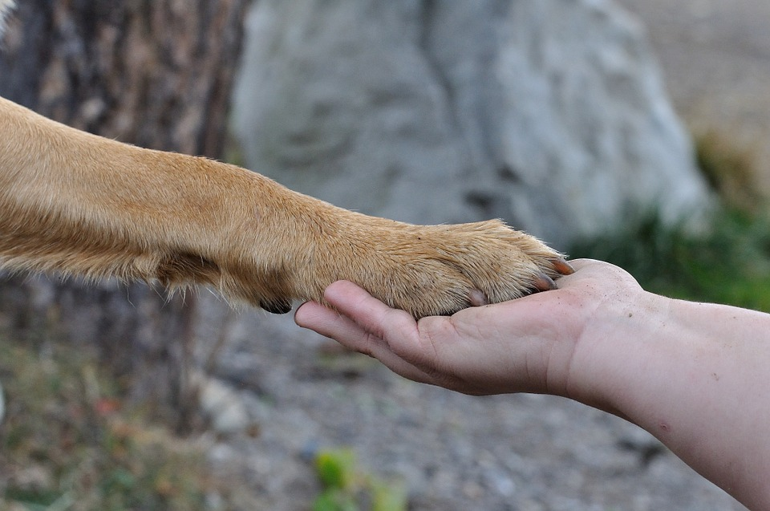
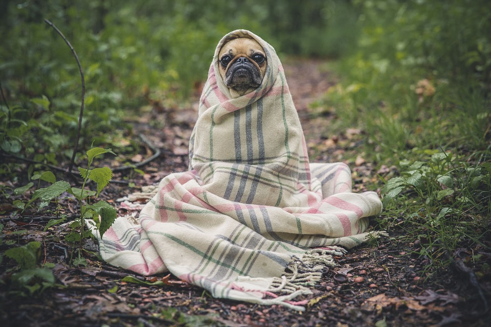
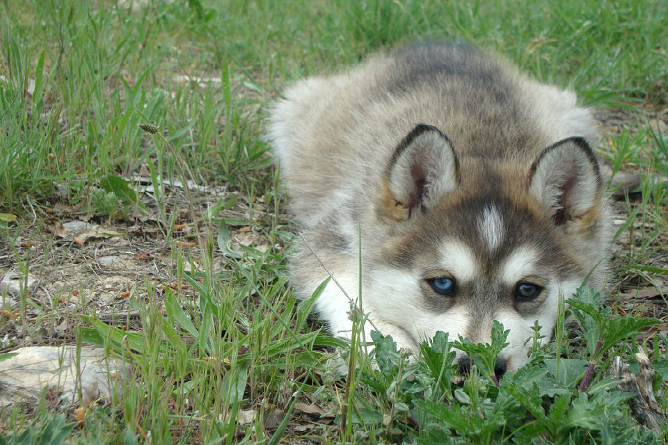

Porque ayudamos a Nuestra Mascotas
 





Es importante comprender que es el mejor amigo del hombre, el perro y el gato hace parte de la familia del hogar, llena de mucha alegría en un hogar, sabemos que una mascota es cariñosa cuando se le trata bien, siempre buscara la forma de jugar contigo, es inofensiva, es por ello que luchamos en contra de los abusos y maltratos de estos pequeños que solo hacen travesuras. Hay que entender que cuando se adopta una mascota es para cuidarla y darle los tratos suficientes que necesita, ya que ellos tienen sentimientos y siente dolor cuando los maltratamos. Luchamos por defender nuestras mascotas aquellos animales se ven vulnerados de igual forma rescatamos aquellos animales que se encuentra en unas condiciones no adecuadas y lamentables.